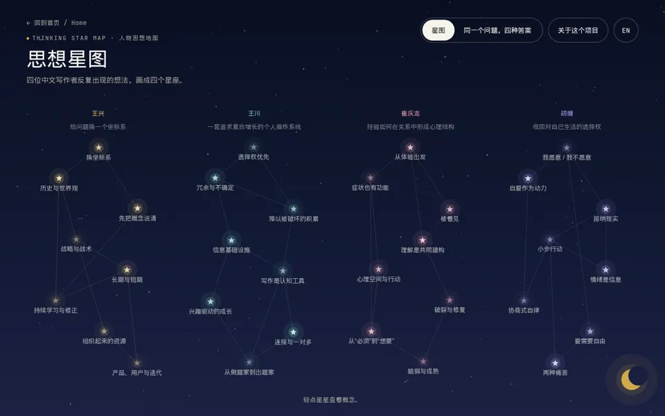
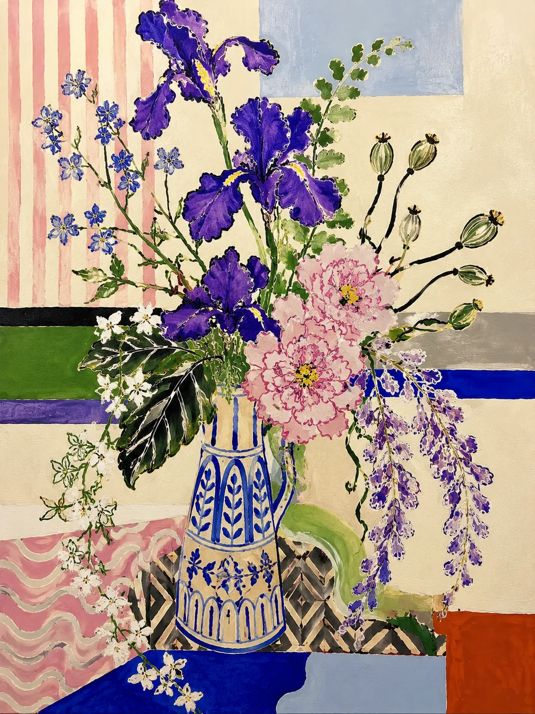

WELCOME TO MY LITTLE WORLD
小枝 · Dialatan
Xiaozhi · learning UE, Blender and AI-assisted coding, and turning ideas into small things you can click.
这里收集画画，互动实验，AI创作 以及普通生活里偶尔亮起来的瞬间
WORKS

用 AI 辅助整理四位中文写作者反复出现的想法，画成一片可以点开的星空。 Recurring ideas of four Chinese writers, mapped as an interactive night sky with AI-assisted research.

AI 辅助的画作，从照片出发。 AI-assisted drawings made from photos.